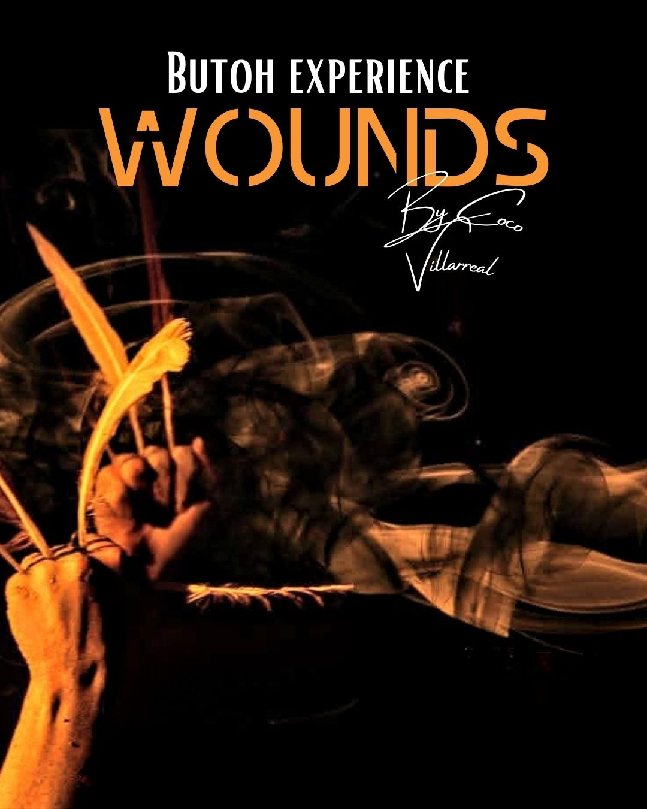
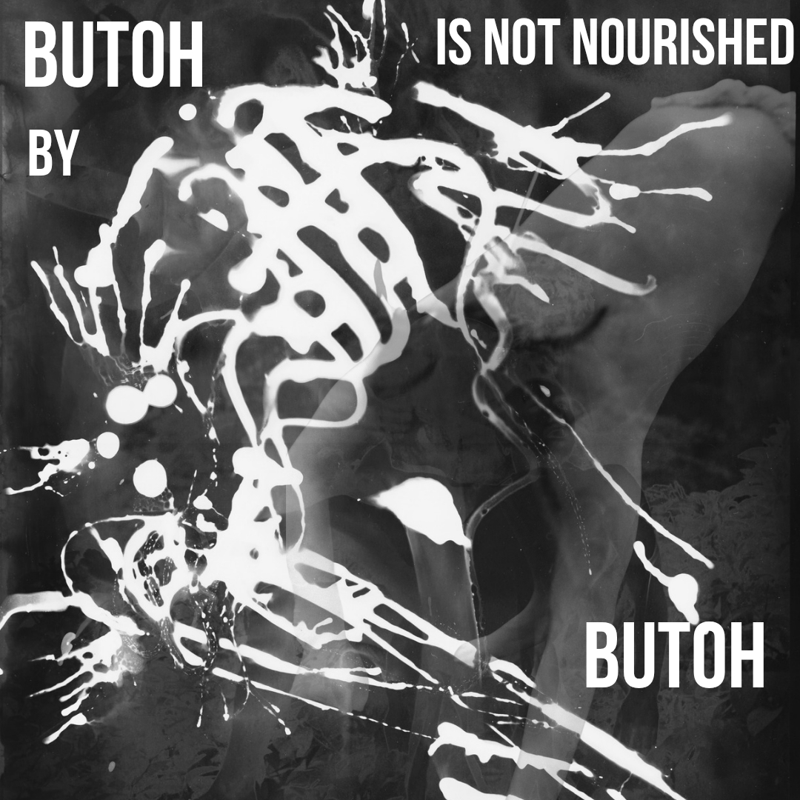

BUTOH DANCER. DIRECTOR. SINGER. 20+ YEARS UNDER DIEGO PIÑÓN, AKIRA KASAI, TAKETERU KUDO. BORN IN MEXICO CITY'S OPERA SHADOWS. DIRECTS IX-BUTOH SINCE 2009 — GUTTURAL CHANT, ANTI-FORM, SOMATIC FIRE.
COCO CATALYSES TRANSFORMATION.
Students, audience, participants — hundreds have trembled witnessing his stage across Tulum beaches, Turkish marathons, Berlin Kiez, Indonesian jungle, Butoh festivals, theater festivals, trance festivals, street jungles, and underground spots where the veil is thinnest.
MEXICAN FIRE + BUTOH VOID = MYSTIC EXPLOSION IN EVERY RITUAL PERFORMANCE.
Since 2007, Coco has guided hundreds through Butoh's unnameable pulse—from Mexico City's plazas to Berlin's Kiez shadows, Tulum beaches to Turkish marathons. His rituals aren't classes; they're rebirths, dissolving ego in somatic fire for souls worldwide.
“I was not used to that intensity in a Butoh class, and Butoh classes can be intense, but a Coco Butoh class is something that stops you on your tracks. You are not the same person before the class; when you leave a Coco class, something will have happened.” — Adam Koans (@shadowbodybutoh)
A raw excavation of the body's hidden scars. No healing. No story. Only the tremor that speaks when words fail. Coco guides you into the wound—not to close it, but to dance from its depth. Bring your silence. Leave your name at the door.
A workshop for those ready to forget Butoh. No steps. No form. No legacy. Only the breath before the name, the joy before the fall, the scar before the story. Coco ignites the void where dance feeds on life—not on dance.
A brief moment of transformation.
On the Winter Solstice, we gather for a Butoh offering in the moment when darkness and light meet. The solstice marks the ending of the long dark nights and the beginning of the lighter days.
At this threshold, the body can symbolically release what has been carried through the year, transform it through movement, and open new spaces.
Through dance, breath, and cleansing, we allow the body to offer its shadows back to the elements.
This event is not-for-profit, shared in the spirit of community—open to anyone who wishes to move, release, and begin again.
Guided by Coco Villarreal, supported by Chao Chen with live music, alongside other artists and supporters.
A 2-hour somatic journey including:
Breath practices
Noguchi Taisō
Butoh Dance
Misogi-inspired cold-water purification
Optional Winter Solstice bathing for physical and energetic cleansing
After the ritual, participants are welcome to join a nearby fire gathering with tea, shared snacks and drinks.
Registration:
Please register via email at ix.butoh@gmail.com
Once your registration is confirmed, you will receive the precise location and all practical details.
Location:
A green, accessible lake inside of Berlin, reachable via a direct U-Bahn ride (45–54 minutes) from central Berlin.
Exact meeting point will be shared after registration.
Meeting Time: 13:00
The exact astronomical instant for Berlin Winter Solstice in UTC:
📍 15:03 UTC on December 21, 2025.
EMAIL: ix.butoh@gmail.com
INSTA: @cocovillarreal.ix
DM FOR RITUALS, WOUNDS, OR THE UNNAMEABLE.